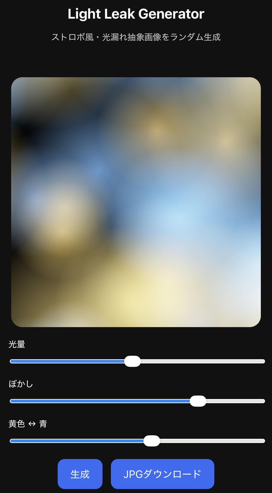
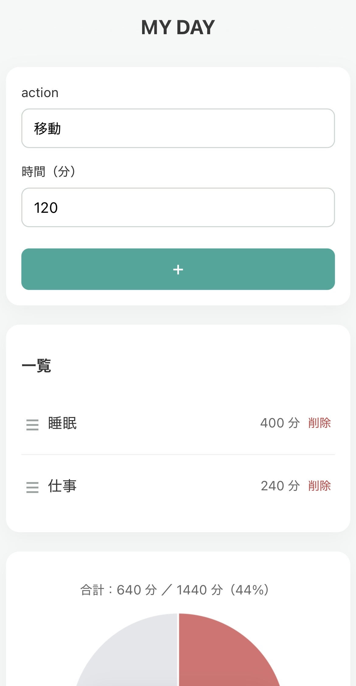

AKANE JINGU
Top
私のこと
個人開発
画廊
個人開発
ハンコ風画像加工アプリ
HTML / CSS / JavaScript
気分記録アプリ
Flask / HTML / CSS
人生で最高の７曲をシェアするアプリ
Flask / HTML / CSS
黒豆せんべいトラッカー
HTML / CSS / JavaScript

青と黄のストロボ撮影風画像生成ジェネレーター
HTML / CSS / JavaScript

１日の過ごし方を可視化するアプリ（MY DAY）
Flask / HTML / CSS / JavaScript
×
▶ アプリを見る
×